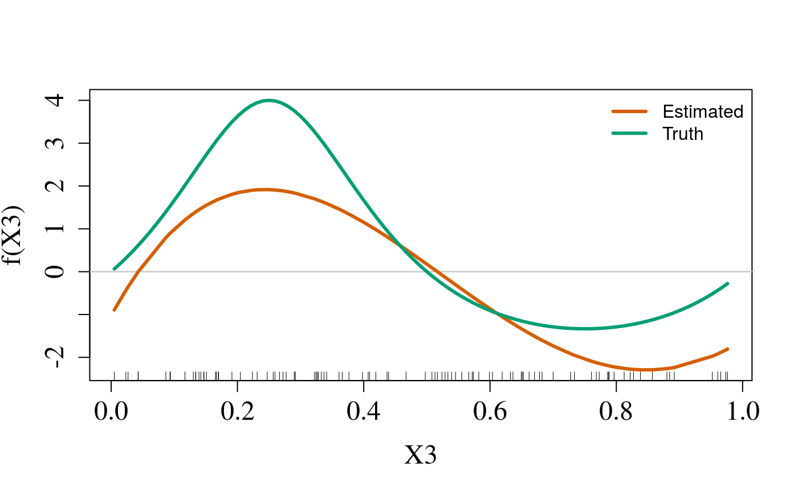
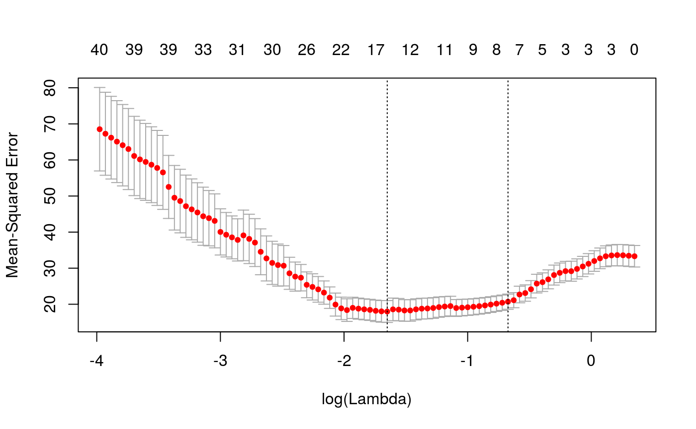
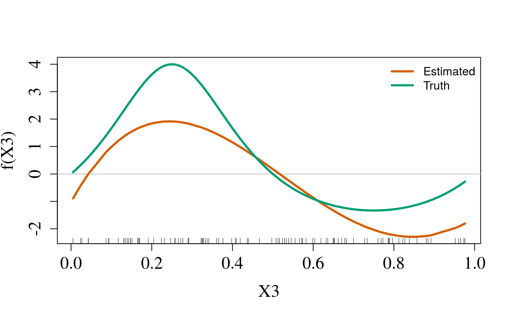
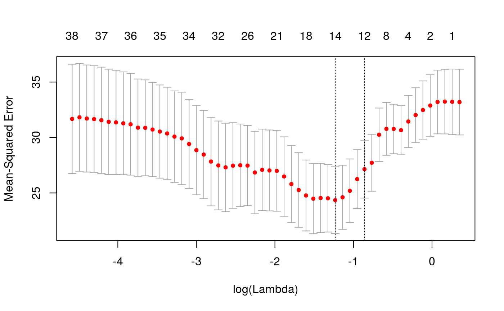
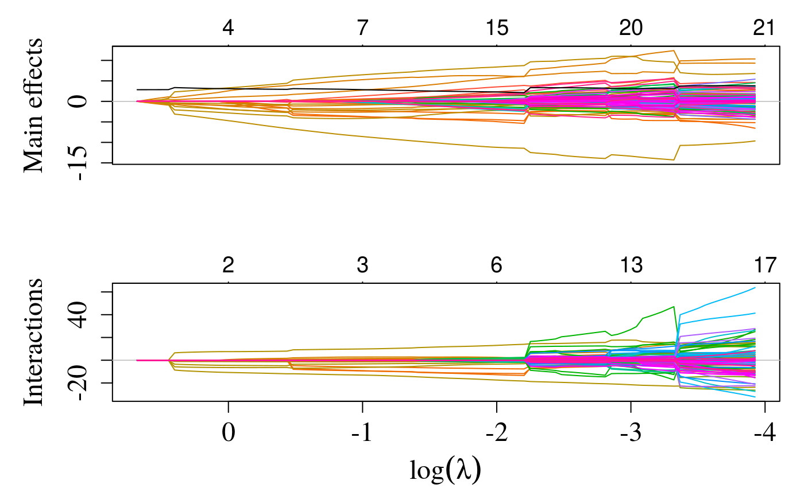

Main Effects
Since we are using simulated data, we also plot the true curve:
plotMain(cvfit$sail.fit, x = sailsim$x, xvar = "X3",
legend.position = "topright",
s = cvfit$lambda.min, f.truth = sailsim$f3)
vignettes/introduction-to-sail.Rmd
introduction-to-sail.Rmdsail is a package that fits a linear model with non-linear interactions via penalized maximum likelihood. The regularization path is computed at a grid of values for the regularization parameter \(\lambda\) and a fixed value of the second regularization parameter \(\alpha\). The method enforces the strong heredity property, i.e., an interaction is selected only if its corresponding main effects are also included. The interactions are limited to a single exposure variable, i.e., \(y \sim e + x_1 + x_2 + e*x_1 + e*x_2 + \epsilon\). Furthermore, this package allows a user-defined basis expansion on the \(x\) variables to allow for non-linear effects. The default is bsplines (e.g. splines::bs(x, 5)). It currently only fits linear models (binomial models are due in the next release).
where \(\boldsymbol{\theta} \equiv (\beta_0, \beta_E,\boldsymbol{\theta}_1, \ldots, \boldsymbol{\theta}_p, \gamma_1, \ldots, \gamma_p)\).
We consider the following penalized least squares criterion for this problem: \[\begin{equation} \arg\min_{\boldsymbol{\theta} } \mathcal{L}(Y;\boldsymbol{\theta}) + \lambda (1-\alpha) \left( w_E |\beta_E| + \sum_{j=1}^{p} w_j \lVert\boldsymbol{\theta}_j \rVert_2 \right) + \lambda\alpha \sum_{j=1}^{p} w_{jE} |\gamma_{j}| \label{eq:lassolikelihood3} \end{equation}\]where \(\lambda >0\) and \(\alpha \in (0,1)\) are tuning parameters and \(w_E, w_j, w_{jE}\) are adaptive weights for \(j=1, \ldots, p\). These weights serve as a way of allowing parameters to be penalized differently.
The package can be installed from GitHub via
install.packages("pacman")
pacman::p_load_gh('sahirbhatnagar/sail')We give a quick overview of the main functions and go into details in other vignettes. We will use the simulated data which ships with the package and can be loaded via:
library(sail)
data("sailsim")
names(sailsim)
#> [1] "x" "y" "e" "f1" "f2" "f3"
#> [7] "f4" "f3.inter" "f4.inter"We first define a basis expansion. In this example we use cubic bsplines with degree 5.
library(splines)
f.basis <- function(x) splines::bs(x, degree = 5)Next we fit the model using the most basic call to sail
fit <- sail(x = sailsim$x, y = sailsim$y, e = sailsim$e, basis = f.basis,
verbose = 0)fit is an object of class sail that contains all the relevant information of the fitted model including the estimated coefficients at each value of \(\lambda\) (by default the program chooses its own decreasing sequence of 100 \(\lambda\) values). There are print, plot, coef and predict methods of objects of class sail. The print method outputs the following:
fit
#>
#> Call: sail(x = sailsim$x, y = sailsim$y, e = sailsim$e, basis = f.basis, verbose = 0)
#>
#> df_main df_interaction df_environment %Dev Lambda
#> s1 0 0 0 0.000000 1.41800
#> s2 0 0 1 0.001371 1.35400
#> s3 0 0 1 0.002711 1.29200
#> s4 0 0 1 0.003955 1.23400
#> s5 2 0 1 0.025520 1.17800
#> s6 2 0 1 0.057640 1.12400
#> s7 2 0 1 0.087540 1.07300
#> s8 2 0 1 0.115400 1.02400
#> s9 2 0 1 0.141200 0.97760
#> s10 2 0 1 0.165200 0.93320
#> s11 2 0 1 0.187500 0.89080
#> s12 2 0 1 0.208200 0.85030
#> s13 2 0 1 0.227400 0.81170
#> s14 3 0 1 0.246800 0.77480
#> s15 3 0 1 0.266000 0.73950
#> s16 3 0 1 0.283600 0.70590
#> s17 3 1 1 0.436200 0.67380
#> s18 3 1 1 0.447100 0.64320
#> s19 3 1 1 0.457900 0.61400
#> s20 4 2 1 0.471600 0.58610
#> s21 4 2 1 0.484000 0.55940
#> s22 4 2 1 0.495500 0.53400
#> s23 5 2 1 0.505800 0.50970
#> s24 5 2 1 0.516700 0.48660
#> s25 5 2 1 0.526800 0.46450
#> s26 5 2 1 0.536100 0.44330
#> s27 5 2 1 0.544700 0.42320
#> s28 5 3 1 0.555100 0.40400
#> s29 5 3 1 0.563600 0.38560
#> s30 5 3 1 0.571500 0.36810
#> s31 7 3 1 0.581700 0.35130
#> s32 7 3 1 0.592200 0.33540
#> s33 7 3 1 0.603100 0.32010
#> s34 7 3 1 0.611500 0.30560
#> s35 7 3 1 0.619500 0.29170
#> s36 7 3 1 0.627000 0.27840
#> s37 7 3 1 0.634800 0.26580
#> s38 7 4 1 0.681800 0.25370
#> s39 7 4 1 0.688200 0.24220
#> s40 7 4 1 0.694200 0.23120
#> s41 7 4 1 0.700200 0.22070
#> s42 7 6 1 0.705400 0.21060
#> s43 7 6 1 0.711800 0.20110
#> s44 7 6 1 0.716800 0.19190
#> s45 9 6 1 0.721700 0.18320
#> s46 10 6 1 0.727100 0.17490
#> s47 11 6 1 0.732300 0.16690
#> s48 12 6 1 0.738400 0.15930
#> s49 12 6 1 0.744300 0.15210
#> s50 12 6 1 0.749900 0.14520
#> s51 14 6 1 0.755700 0.13860
#> s52 15 6 1 0.761700 0.13230
#> s53 15 6 1 0.768000 0.12630
#> s54 16 7 1 0.774700 0.12050
#> s55 13 11 1 0.830100 0.11500
#> s56 13 11 1 0.833400 0.10980
#> s57 13 11 1 0.836800 0.10480
#> s58 14 11 1 0.840000 0.10010
#> s59 14 11 1 0.843300 0.09552
#> s60 14 11 1 0.846400 0.09117
#> s61 16 13 1 0.899100 0.08703
#> s62 16 13 1 0.901600 0.08308
#> s63 16 12 1 0.905100 0.07930
#> s64 16 13 1 0.907500 0.07569
#> s65 16 13 1 0.910700 0.07225
#> s66 16 14 1 0.913400 0.06897
#> s67 16 14 1 0.916100 0.06584
#> s68 16 14 1 0.918600 0.06284
#> s69 17 14 1 0.921200 0.05999
#> s70 17 13 1 0.923700 0.05726
#> s71 17 13 1 0.926200 0.05466
#> s72 17 13 1 0.928600 0.05217
#> s73 18 13 1 0.930900 0.04980
#> s74 18 13 1 0.933100 0.04754
#> s75 18 13 1 0.935300 0.04538
#> s76 19 13 1 0.937400 0.04332
#> s77 19 15 1 0.945000 0.04135
#> s78 20 16 1 0.946700 0.03947
#> s79 20 16 1 0.948500 0.03767
#> s80 20 16 1 0.950500 0.03596
#> s81 20 16 1 0.952300 0.03433
#> s82 20 18 1 0.957300 0.03277
#> s83 20 18 1 0.958200 0.03128
#> s84 20 18 1 0.959300 0.02986
#> s85 20 18 1 0.960400 0.02850
#> s86 20 18 1 0.961600 0.02720
#> s87 20 18 1 0.962700 0.02597
#> s88 20 18 1 0.963900 0.02479
#> s89 20 18 1 0.964900 0.02366
#> s90 20 18 1 0.966000 0.02258
#> s91 20 19 1 0.967000 0.02156
#> s92 20 19 1 0.969400 0.02058
#> s93 20 19 1 0.970300 0.01964
#> s94 20 19 1 0.971900 0.01875
#> s95 20 19 1 0.972600 0.01790
#> s96 20 19 1 0.973500 0.01708
#> s97 20 19 1 0.974200 0.01631
#> s98 20 19 1 0.975000 0.01557
#> s99 20 19 1 0.975800 0.01486
#> s100 20 20 1 0.976500 0.01418When expand = TRUE (i.e. the user did not provide their own design matrix), the df_main and df_interaction columns correspond to the number of non-zero predictors present in the model before basis expansion. This does not correspond to the number of non-zero coefficients in the model, but rather the number of unique variables. In this example we expanded each column of \(\mathbf{X}\) to five columns. If df_main=4, df_interaction=2 and df_environment=1, then the total number of non-zero coefficients would be \(5 \times (4+2) + 1\).
The entire solution path can be plotted via the plot method for objects of class sail. The y-axis is the value of the coefficient and the x-axis is the \(\log(\lambda)\). Each line represents a coefficient in the model, and each color represents a variable (i.e. in this example a given variable will have 5 lines when it is non-zero). The numbers at the top of the plot represent the number of non-zero variables in the model: top panel (df_main + df_environment), bottom panel (df_interaction). The black line is the coefficient path for the environment variable.
plot(fit)
The estimated coefficients at each value of lambda is given by (matrix partially printed here for brevity)
coef(fit)[1:5,1:5]
#> 5 x 5 sparse Matrix of class "dgCMatrix"
#> s1 s2 s3 s4 s5
#> (Intercept) 5.328505 5.332607 5.33666 5.340466 5.344098
#> X1_1 . . . . .
#> X1_2 . . . . .
#> X1_3 . . . . .
#> X1_4 . . . . .The predicted response at each value of lambda:
predict(fit)[1:5,1:5]
#> s1 s2 s3 s4 s5
#> [1,] 5.328505 5.312344 5.296375 5.281383 5.305822
#> [2,] 5.328505 5.317729 5.307080 5.297083 5.352881
#> [3,] 5.328505 5.352655 5.376516 5.398919 5.280278
#> [4,] 5.328505 5.363960 5.398991 5.431881 5.613893
#> [5,] 5.328505 5.317676 5.306976 5.296930 5.137411The predicted response at a specific value of lambda can be specified by the s argument:
predict(fit, s = 0.8)
#> 1
#> [1,] 5.813009
#> [2,] 5.021545
#> [3,] 3.757470
#> [4,] 6.834599
#> [5,] 3.057688
#> [6,] 3.614727
#> [7,] 6.788465
#> [8,] 5.174857
#> [9,] 6.200803
#> [10,] 5.668292
#> [11,] 4.871492
#> [12,] 7.457299
#> [13,] 7.288454
#> [14,] 4.713885
#> [15,] 7.884583
#> [16,] 4.984439
#> [17,] 4.223266
#> [18,] 4.608374
#> [19,] 4.942420
#> [20,] 5.787298
#> [21,] 6.736581
#> [22,] 5.828758
#> [23,] 4.592376
#> [24,] 7.062508
#> [25,] 4.133018
#> [26,] 7.260927
#> [27,] 7.440090
#> [28,] 3.519319
#> [29,] 6.933482
#> [30,] 6.591329
#> [31,] 5.259667
#> [32,] 5.334661
#> [33,] 7.178356
#> [34,] 4.272326
#> [35,] 7.803006
#> [36,] 5.400352
#> [37,] 5.364526
#> [38,] 4.375179
#> [39,] 4.884971
#> [40,] 5.542767
#> [41,] 3.537782
#> [42,] 3.623843
#> [43,] 5.595137
#> [44,] 7.719343
#> [45,] 4.131773
#> [46,] 4.463181
#> [47,] 5.476336
#> [48,] 7.729545
#> [49,] 4.516719
#> [50,] 5.339348
#> [51,] 5.693488
#> [52,] 4.532031
#> [53,] 5.582909
#> [54,] 5.786038
#> [55,] 4.715549
#> [56,] 4.362933
#> [57,] 4.968405
#> [58,] 5.278855
#> [59,] 6.975841
#> [60,] 5.191631
#> [61,] 4.608410
#> [62,] 3.085092
#> [63,] 6.769030
#> [64,] 4.641189
#> [65,] 4.702694
#> [66,] 6.574819
#> [67,] 5.059686
#> [68,] 6.325117
#> [69,] 5.411839
#> [70,] 7.157186
#> [71,] 5.001802
#> [72,] 3.479185
#> [73,] 5.820304
#> [74,] 7.282633
#> [75,] 3.543560
#> [76,] 4.794373
#> [77,] 3.413312
#> [78,] 5.654014
#> [79,] 5.508392
#> [80,] 4.913627
#> [81,] 5.890552
#> [82,] 6.238446
#> [83,] 4.983866
#> [84,] 7.003037
#> [85,] 5.603688
#> [86,] 3.619360
#> [87,] 4.007716
#> [88,] 4.306506
#> [89,] 4.241862
#> [90,] 3.729627
#> [91,] 5.277631
#> [92,] 7.316173
#> [93,] 5.572510
#> [94,] 6.833482
#> [95,] 4.800228
#> [96,] 3.740207
#> [97,] 5.080186
#> [98,] 5.049081
#> [99,] 4.009783
#> [100,] 6.287320You can specify more than one value for s:
predict(fit, s = c(0.8, 0.2))
#> 1 2
#> [1,] 5.813009 6.71855081
#> [2,] 5.021545 2.65996549
#> [3,] 3.757470 2.46990229
#> [4,] 6.834599 15.21267212
#> [5,] 3.057688 1.78753810
#> [6,] 3.614727 1.69919001
#> [7,] 6.788465 13.66404654
#> [8,] 5.174857 5.88433943
#> [9,] 6.200803 5.29766673
#> [10,] 5.668292 4.90230463
#> [11,] 4.871492 3.80562233
#> [12,] 7.457299 12.17959186
#> [13,] 7.288454 12.67153233
#> [14,] 4.713885 4.17356257
#> [15,] 7.884583 14.66682102
#> [16,] 4.984439 4.66356969
#> [17,] 4.223266 0.30827872
#> [18,] 4.608374 4.96772027
#> [19,] 4.942420 3.47297405
#> [20,] 5.787298 3.59049077
#> [21,] 6.736581 8.74074489
#> [22,] 5.828758 5.13636216
#> [23,] 4.592376 2.06056902
#> [24,] 7.062508 10.93733791
#> [25,] 4.133018 0.60343649
#> [26,] 7.260927 9.26419880
#> [27,] 7.440090 9.31974444
#> [28,] 3.519319 -2.21472498
#> [29,] 6.933482 14.57355630
#> [30,] 6.591329 2.51526564
#> [31,] 5.259667 6.04700181
#> [32,] 5.334661 7.49240127
#> [33,] 7.178356 9.07923572
#> [34,] 4.272326 5.13176431
#> [35,] 7.803006 16.23893320
#> [36,] 5.400352 -0.02450773
#> [37,] 5.364526 5.81903824
#> [38,] 4.375179 2.55865330
#> [39,] 4.884971 3.73954846
#> [40,] 5.542767 4.54453530
#> [41,] 3.537782 2.05440267
#> [42,] 3.623843 0.46435000
#> [43,] 5.595137 6.89160480
#> [44,] 7.719343 16.24730945
#> [45,] 4.131773 2.84935254
#> [46,] 4.463181 3.06910954
#> [47,] 5.476336 4.22374722
#> [48,] 7.729545 18.36703801
#> [49,] 4.516719 2.43430460
#> [50,] 5.339348 8.62556880
#> [51,] 5.693488 5.87442571
#> [52,] 4.532031 2.05925828
#> [53,] 5.582909 7.30158320
#> [54,] 5.786038 8.50980883
#> [55,] 4.715549 2.60812490
#> [56,] 4.362933 0.96993923
#> [57,] 4.968405 5.85942842
#> [58,] 5.278855 9.29175380
#> [59,] 6.975841 10.64103766
#> [60,] 5.191631 1.72999804
#> [61,] 4.608410 1.01765610
#> [62,] 3.085092 -1.36662293
#> [63,] 6.769030 7.71041464
#> [64,] 4.641189 1.07757022
#> [65,] 4.702694 3.14226217
#> [66,] 6.574819 3.56400966
#> [67,] 5.059686 5.01798327
#> [68,] 6.325117 6.53739996
#> [69,] 5.411839 10.11664214
#> [70,] 7.157186 8.32773980
#> [71,] 5.001802 4.54347910
#> [72,] 3.479185 1.39240724
#> [73,] 5.820304 6.55457679
#> [74,] 7.282633 4.32826976
#> [75,] 3.543560 2.97936176
#> [76,] 4.794373 0.70053797
#> [77,] 3.413312 1.45949772
#> [78,] 5.654014 14.49818103
#> [79,] 5.508392 6.35601483
#> [80,] 4.913627 2.73329919
#> [81,] 5.890552 4.09719618
#> [82,] 6.238446 5.21298804
#> [83,] 4.983866 5.06540911
#> [84,] 7.003037 6.06219477
#> [85,] 5.603688 4.95224834
#> [86,] 3.619360 1.79371159
#> [87,] 4.007716 3.53193531
#> [88,] 4.306506 0.20329664
#> [89,] 4.241862 4.06907308
#> [90,] 3.729627 5.82274574
#> [91,] 5.277631 9.08278039
#> [92,] 7.316173 10.71175371
#> [93,] 5.572510 5.46496010
#> [94,] 6.833482 7.47160713
#> [95,] 4.800228 5.63758029
#> [96,] 3.740207 1.90274261
#> [97,] 5.080186 9.60767728
#> [98,] 5.049081 7.41670061
#> [99,] 4.009783 3.51883441
#> [100,] 6.287320 4.98717447cv.sail is the main function to do cross-validation along with plot, predict, and coef methods for objects of class cv.sail. We run it in parallel:
library(doMC)
#> Loading required package: foreach
#> Loading required package: iterators
#> Loading required package: parallel
registerDoMC(cores = 2)
cvfit <- cv.sail(x = sailsim$x, y = sailsim$y, e = sailsim$e, basis = f.basis,
verbose = 0, nfolds = 10, parallel = TRUE)We plot the cross-validated error curve which has the mean-squared error on the y-axis and \(\log(\lambda)\) on the x-axis. It includes the cross-validation curve (red dotted line), and upper and lower standard deviation curves along the \(\lambda\) sequence (error bars). Two selected \(\lambda\)’s are indicated by the vertical dotted lines (see below). The numbers at the top of the plot represent the total number of non-zero variables at that value of \(\lambda\) (df_main + df_environment + df_interaction):
plot(cvfit)
lambda.min is the value of \(\lambda\) that gives minimum mean cross-validated error. The other \(\lambda\) saved is lambda.1se, which gives the most regularized model such that error is within one standard error of the minimum. We can view the selected \(\lambda\)’s and the corresponding coefficients:
cvfit[["lambda.min"]]
#> [1] 0.1919144
cvfit[["lambda.1se"]]
#> [1] 0.5097415The estimated coefficients at lambda.1se and lambda.min:
cbind(coef(cvfit, s="lambda.1se"), # lambda.1se is the default
coef(cvfit, s = "lambda.min"))
#> 202 x 2 sparse Matrix of class "dgCMatrix"
#> 1 1
#> (Intercept) 5.524692e+00 5.393931114
#> X1_1 -5.535020e-01 -0.822220730
#> X1_2 4.296505e-02 1.398918455
#> X1_3 2.335016e-01 1.273167303
#> X1_4 5.285136e-01 1.238901919
#> X1_5 1.458328e+00 2.988908642
#> X2_1 . 0.131584670
#> X2_2 . -3.032948729
#> X2_3 . -2.662164812
#> X2_4 . -0.297786022
#> X2_5 . -1.706795571
#> X3_1 2.909152e+00 5.071159593
#> X3_2 1.420194e+00 3.529153250
#> X3_3 -1.017524e+00 -1.036358490
#> X3_4 -2.050315e+00 -2.402735424
#> X3_5 -1.223299e+00 -0.914129140
#> X4_1 4.183501e+00 6.931652423
#> X4_2 -2.637339e+00 -2.255139394
#> X4_3 -6.105220e+00 -9.100252546
#> X4_4 -3.315902e+00 -3.354749246
#> X4_5 -6.511128e-01 -0.827429642
#> X5_1 . .
#> X5_2 . .
#> X5_3 . .
#> X5_4 . .
#> X5_5 . .
#> X6_1 . .
#> X6_2 . .
#> X6_3 . .
#> X6_4 . .
#> X6_5 . .
#> X7_1 . .
#> X7_2 . .
#> X7_3 . .
#> X7_4 . .
#> X7_5 . .
#> X8_1 1.468052e-01 1.041269779
#> X8_2 9.877758e-02 0.945535230
#> X8_3 1.522655e-02 0.372651807
#> X8_4 -9.507427e-02 -0.461758478
#> X8_5 -2.051683e-01 -1.206441228
#> X9_1 . .
#> X9_2 . .
#> X9_3 . .
#> X9_4 . .
#> X9_5 . .
#> X10_1 . .
#> X10_2 . .
#> X10_3 . .
#> X10_4 . .
#> X10_5 . .
#> X11_1 2.194283e-03 0.388512930
#> X11_2 5.884922e-04 -0.022040750
#> X11_3 -1.060758e-03 -0.151779956
#> X11_4 -3.266061e-03 -1.294662723
#> X11_5 -3.466141e-03 -1.560570934
#> X12_1 . .
#> X12_2 . .
#> X12_3 . .
#> X12_4 . .
#> X12_5 . .
#> X13_1 . .
#> X13_2 . .
#> X13_3 . .
#> X13_4 . .
#> X13_5 . .
#> X14_1 . .
#> X14_2 . .
#> X14_3 . .
#> X14_4 . .
#> X14_5 . .
#> X15_1 . .
#> X15_2 . .
#> X15_3 . .
#> X15_4 . .
#> X15_5 . .
#> X16_1 . .
#> X16_2 . .
#> X16_3 . .
#> X16_4 . .
#> X16_5 . .
#> X17_1 . .
#> X17_2 . .
#> X17_3 . .
#> X17_4 . .
#> X17_5 . .
#> X18_1 . .
#> X18_2 . .
#> X18_3 . .
#> X18_4 . .
#> X18_5 . .
#> X19_1 . .
#> X19_2 . .
#> X19_3 . .
#> X19_4 . .
#> X19_5 . .
#> X20_1 . 0.962992457
#> X20_2 . -0.211677340
#> X20_3 . -1.447385488
#> X20_4 . -1.462929815
#> X20_5 . 0.956589883
#> E 1.926923e+00 2.435966886
#> X1_1:E . -0.033853053
#> X1_2:E . 0.057597260
#> X1_3:E . 0.052419744
#> X1_4:E . 0.051008946
#> X1_5:E . 0.123061460
#> X2_1:E . 0.455648582
#> X2_2:E . -10.502429995
#> X2_3:E . -9.218487378
#> X2_4:E . -1.031167069
#> X2_5:E . -5.910255203
#> X3_1:E 8.665690e-01 2.354222494
#> X3_2:E 4.230430e-01 1.638365312
#> X3_3:E -3.030969e-01 -0.481116483
#> X3_4:E -6.107414e-01 -1.115439907
#> X3_5:E -3.643923e-01 -0.424373034
#> X4_1:E 8.078422e+00 11.458113806
#> X4_2:E -5.092753e+00 -3.727775464
#> X4_3:E -1.178930e+01 -15.042838702
#> X4_4:E -6.403072e+00 -5.545445199
#> X4_5:E -1.257311e+00 -1.367752223
#> X5_1:E . .
#> X5_2:E . .
#> X5_3:E . .
#> X5_4:E . .
#> X5_5:E . .
#> X6_1:E . .
#> X6_2:E . .
#> X6_3:E . .
#> X6_4:E . .
#> X6_5:E . .
#> X7_1:E . .
#> X7_2:E . .
#> X7_3:E . .
#> X7_4:E . .
#> X7_5:E . .
#> X8_1:E . 1.122704862
#> X8_2:E . 1.019483156
#> X8_3:E . 0.401795965
#> X8_4:E . -0.497871444
#> X8_5:E . -1.300793953
#> X9_1:E . .
#> X9_2:E . .
#> X9_3:E . .
#> X9_4:E . .
#> X9_5:E . .
#> X10_1:E . .
#> X10_2:E . .
#> X10_3:E . .
#> X10_4:E . .
#> X10_5:E . .
#> X11_1:E . 0.138707094
#> X11_2:E . -0.007869001
#> X11_3:E . -0.054188561
#> X11_4:E . -0.462221177
#> X11_5:E . -0.557155869
#> X12_1:E . .
#> X12_2:E . .
#> X12_3:E . .
#> X12_4:E . .
#> X12_5:E . .
#> X13_1:E . .
#> X13_2:E . .
#> X13_3:E . .
#> X13_4:E . .
#> X13_5:E . .
#> X14_1:E . .
#> X14_2:E . .
#> X14_3:E . .
#> X14_4:E . .
#> X14_5:E . .
#> X15_1:E . .
#> X15_2:E . .
#> X15_3:E . .
#> X15_4:E . .
#> X15_5:E . .
#> X16_1:E . .
#> X16_2:E . .
#> X16_3:E . .
#> X16_4:E . .
#> X16_5:E . .
#> X17_1:E . .
#> X17_2:E . .
#> X17_3:E . .
#> X17_4:E . .
#> X17_5:E . .
#> X18_1:E . .
#> X18_2:E . .
#> X18_3:E . .
#> X18_4:E . .
#> X18_5:E . .
#> X19_1:E . .
#> X19_2:E . .
#> X19_3:E . .
#> X19_4:E . .
#> X19_5:E . .
#> X20_1:E . .
#> X20_2:E . .
#> X20_3:E . .
#> X20_4:E . .
#> X20_5:E . .Estimated non-zero coefficients at lambda.1se:
predict(cvfit, type = "nonzero")
#> 1
#> (Intercept) 5.524692e+00
#> X1_1 -5.535020e-01
#> X1_2 4.296505e-02
#> X1_3 2.335016e-01
#> X1_4 5.285136e-01
#> X1_5 1.458328e+00
#> X3_1 2.909152e+00
#> X3_2 1.420194e+00
#> X3_3 -1.017524e+00
#> X3_4 -2.050315e+00
#> X3_5 -1.223299e+00
#> X4_1 4.183501e+00
#> X4_2 -2.637339e+00
#> X4_3 -6.105220e+00
#> X4_4 -3.315902e+00
#> X4_5 -6.511128e-01
#> X8_1 1.468052e-01
#> X8_2 9.877758e-02
#> X8_3 1.522655e-02
#> X8_4 -9.507427e-02
#> X8_5 -2.051683e-01
#> X11_1 2.194283e-03
#> X11_2 5.884922e-04
#> X11_3 -1.060758e-03
#> X11_4 -3.266061e-03
#> X11_5 -3.466141e-03
#> E 1.926923e+00
#> X3_1:E 8.665690e-01
#> X3_2:E 4.230430e-01
#> X3_3:E -3.030969e-01
#> X3_4:E -6.107414e-01
#> X3_5:E -3.643923e-01
#> X4_1:E 8.078422e+00
#> X4_2:E -5.092753e+00
#> X4_3:E -1.178930e+01
#> X4_4:E -6.403072e+00
#> X4_5:E -1.257311e+00bsplines are difficult to interpret. We provide a plotting function to visualize the effect of the non-linear function on the response.
Since we are using simulated data, we also plot the true curve:
plotMain(cvfit$sail.fit, x = sailsim$x, xvar = "X3",
legend.position = "topright",
s = cvfit$lambda.min, f.truth = sailsim$f3)
Again, since we are using simulated data, we also plot the true interaction:
plotInter(cvfit$sail.fit, x = sailsim$x, xvar = "X4",
f.truth = sailsim$f4.inter,
s = cvfit$lambda.min,
title_z = "Estimated")
The basis argument in the sail function is very flexible in that it allows you to apply any basis expansion to the columns of \(\mathbf{X}\). Of course, there might be situations where you do not expect any non-linear main effects or interactions to be present in your data. You can still use the sail method to search for linear main effects and interactions. This can be accomplished by specifying an identity map:
f.identity <- function(i) iWe then pass this function to basis argument in cv.sail:
cvfit_linear <- cv.sail(x = sailsim$x, y = sailsim$y, e = sailsim$e,
basis = f.identity, nfolds = 10, parallel = TRUE)
#> Index: 1, lambda: 1.4184
#> Index: 2, lambda: 1.2924
#> Index: 3, lambda: 1.1776
#> Index: 4, lambda: 1.0730
#> Index: 5, lambda: 0.9776
#> Index: 6, lambda: 0.8908
#> Index: 7, lambda: 0.8117
#> Index: 8, lambda: 0.7395
#> Index: 9, lambda: 0.6738
#> Index: 10, lambda: 0.6140
#> Index: 11, lambda: 0.5594
#> Index: 12, lambda: 0.5097
#> Index: 13, lambda: 0.4645
#> Index: 14, lambda: 0.4232
#> Index: 15, lambda: 0.3856
#> Index: 16, lambda: 0.3513
#> Index: 17, lambda: 0.3201
#> Index: 18, lambda: 0.2917
#> Index: 19, lambda: 0.2658
#> Index: 20, lambda: 0.2422
#> Index: 21, lambda: 0.2207
#> Index: 22, lambda: 0.2011
#> Index: 23, lambda: 0.1832
#> Index: 24, lambda: 0.1669
#> Index: 25, lambda: 0.1521
#> Index: 26, lambda: 0.1386
#> Index: 27, lambda: 0.1263
#> Index: 28, lambda: 0.1150
#> Index: 29, lambda: 0.1048
#> Index: 30, lambda: 0.0955
#> Index: 31, lambda: 0.0870
#> Index: 32, lambda: 0.0793
#> Index: 33, lambda: 0.0723
#> Index: 34, lambda: 0.0658
#> Index: 35, lambda: 0.0600
#> Index: 36, lambda: 0.0547
#> Index: 37, lambda: 0.0498
#> Index: 38, lambda: 0.0454
#> Index: 39, lambda: 0.0413
#> Index: 40, lambda: 0.0377
#> Index: 41, lambda: 0.0343
#> Index: 42, lambda: 0.0313
#> Index: 43, lambda: 0.0285
#> Index: 44, lambda: 0.0260
#> Index: 45, lambda: 0.0237
#> Index: 46, lambda: 0.0216
#> Index: 47, lambda: 0.0196
#> Index: 48, lambda: 0.0179
#> Index: 49, lambda: 0.0163
#> Index: 50, lambda: 0.0149
#> Index: 51, lambda: 0.0135
#> Index: 52, lambda: 0.0123
#> Index: 53, lambda: 0.0112
#> Index: 54, lambda: 0.0102
#> Index: 55, lambda: 0.0093
#> Index: 56, lambda: 0.0085
#> Index: 57, lambda: 0.0077
#> Index: 58, lambda: 0.0071
#> Index: 59, lambda: 0.0064
#> Index: 60, lambda: 0.0059
#> Index: 61, lambda: 0.0053
#> Index: 62, lambda: 0.0049
#> Index: 63, lambda: 0.0044
#> Index: 64, lambda: 0.0040
#> Index: 65, lambda: 0.0037
#> Index: 66, lambda: 0.0034
#> Index: 67, lambda: 0.0031
#> Index: 68, lambda: 0.0028Next we plot the cross-validated curve:
plot(cvfit_linear)
And extract the model at lambda.min:
coef(cvfit_linear, s = "lambda.min")
#> 42 x 1 sparse Matrix of class "dgCMatrix"
#> 1
#> (Intercept) 5.5349388
#> X1_1 2.1098433
#> X2_1 .
#> X3_1 -3.7113805
#> X4_1 -6.0928298
#> X5_1 .
#> X6_1 .
#> X7_1 .
#> X8_1 -0.6603712
#> X9_1 .
#> X10_1 .
#> X11_1 -2.6138900
#> X12_1 .
#> X13_1 .
#> X14_1 -1.1628492
#> X15_1 .
#> X16_1 2.5387775
#> X17_1 .
#> X18_1 .
#> X19_1 .
#> X20_1 .
#> E 2.0874458
#> X1_1:E -1.0586744
#> X2_1:E .
#> X3_1:E -1.5035178
#> X4_1:E -10.8144229
#> X5_1:E .
#> X6_1:E .
#> X7_1:E .
#> X8_1:E .
#> X9_1:E .
#> X10_1:E .
#> X11_1:E -1.8596248
#> X12_1:E .
#> X13_1:E .
#> X14_1:E .
#> X15_1:E .
#> X16_1:E 5.2961920
#> X17_1:E .
#> X18_1:E .
#> X19_1:E .
#> X20_1:E .Recall that we consider the following penalized least squares criterion for this problem:
\[\begin{equation} \arg\min_{\boldsymbol{\theta} } \mathcal{L}(Y;\boldsymbol{\theta}) + \lambda (1-\alpha) \left( w_E |\beta_E| + \sum_{j=1}^{p} w_j \lVert\boldsymbol{\theta}_j \rVert_2 \right) + \lambda\alpha \sum_{j=1}^{p} w_{jE} |\gamma_{j}| \end{equation}\]The weights \(w_E, w_j, w_{jE}\) are by default set to 1 as specified by the penalty.factor argument. This argument allows users to apply separate penalty factors to each coefficient. In particular, any variable with penalty.factor equal to zero is not penalized at all. This feature can be applied mainly for two reasons:
sail, similar to the Adaptive Lasso
In the following example, we want the environment variable to always be included so we set the first element of p.fac to zero. We also want to apply less of a penalty to the main effects for \(X_2, X_3, X_4\):
# the weights correspond to E, X1, X2, X3, ... X_p, X1:E, X2:E, ... X_p:E
p.fac <- c(0, 1, 0.4, 0.6, 0.7, rep(1, 2*ncol(sailsim$x) - 4))fit_pf <- sail(x = sailsim$x, y = sailsim$y, e = sailsim$e, basis = f.basis,
penalty.factor = p.fac)
#> Index: 1, lambda: 1.9739
#> Index: 2, lambda: 1.8842
#> Index: 3, lambda: 1.7985
#> Index: 4, lambda: 1.7168
#> Index: 5, lambda: 1.6387
#> Index: 6, lambda: 1.5643
#> Index: 7, lambda: 1.4932
#> Index: 8, lambda: 1.4253
#> Index: 9, lambda: 1.3605
#> Index: 10, lambda: 1.2987
#> Index: 11, lambda: 1.2396
#> Index: 12, lambda: 1.1833
#> Index: 13, lambda: 1.1295
#> Index: 14, lambda: 1.0782
#> Index: 15, lambda: 1.0292
#> Index: 16, lambda: 0.9824
#> Index: 17, lambda: 0.9377
#> Index: 18, lambda: 0.8951
#> Index: 19, lambda: 0.8544
#> Index: 20, lambda: 0.8156
#> Index: 21, lambda: 0.7785
#> Index: 22, lambda: 0.7431
#> Index: 23, lambda: 0.7094
#> Index: 24, lambda: 0.6771
#> Index: 25, lambda: 0.6464
#> Index: 26, lambda: 0.6170
#> Index: 27, lambda: 0.5889
#> Index: 28, lambda: 0.5622
#> Index: 29, lambda: 0.5366
#> Index: 30, lambda: 0.5122
#> Index: 31, lambda: 0.4889
#> Index: 32, lambda: 0.4667
#> Index: 33, lambda: 0.4455
#> Index: 34, lambda: 0.4253
#> Index: 35, lambda: 0.4059
#> Index: 36, lambda: 0.3875
#> Index: 37, lambda: 0.3699
#> Index: 38, lambda: 0.3531
#> Index: 39, lambda: 0.3370
#> Index: 40, lambda: 0.3217
#> Index: 41, lambda: 0.3071
#> Index: 42, lambda: 0.2931
#> Index: 43, lambda: 0.2798
#> Index: 44, lambda: 0.2671
#> Index: 45, lambda: 0.2549
#> Index: 46, lambda: 0.2433
#> Index: 47, lambda: 0.2323
#> Index: 48, lambda: 0.2217
#> Index: 49, lambda: 0.2117
#> Index: 50, lambda: 0.2020
#> Index: 51, lambda: 0.1928
#> Index: 52, lambda: 0.1841
#> Index: 53, lambda: 0.1757
#> Index: 54, lambda: 0.1677
#> Index: 55, lambda: 0.1601
#> Index: 56, lambda: 0.1528
#> Index: 57, lambda: 0.1459
#> Index: 58, lambda: 0.1393
#> Index: 59, lambda: 0.1329
#> Index: 60, lambda: 0.1269
#> Index: 61, lambda: 0.1211
#> Index: 62, lambda: 0.1156
#> Index: 63, lambda: 0.1104
#> Index: 64, lambda: 0.1053
#> Index: 65, lambda: 0.1006
#> Index: 66, lambda: 0.0960
#> Index: 67, lambda: 0.0916
#> Index: 68, lambda: 0.0875
#> Index: 69, lambda: 0.0835
#> Index: 70, lambda: 0.0797
#> Index: 71, lambda: 0.0761
#> Index: 72, lambda: 0.0726
#> Index: 73, lambda: 0.0693
#> Index: 74, lambda: 0.0662
#> Index: 75, lambda: 0.0631
#> Index: 76, lambda: 0.0603
#> Index: 77, lambda: 0.0575
#> Index: 78, lambda: 0.0549
#> Index: 79, lambda: 0.0524
#> Index: 80, lambda: 0.0500
#> Index: 81, lambda: 0.0478
#> Index: 82, lambda: 0.0456
#> Index: 83, lambda: 0.0435
#> Index: 84, lambda: 0.0415
#> Index: 85, lambda: 0.0397
#> Index: 86, lambda: 0.0379
#> Index: 87, lambda: 0.0361
#> Index: 88, lambda: 0.0345
#> Index: 89, lambda: 0.0329
#> Index: 90, lambda: 0.0314
#> Index: 91, lambda: 0.0300
#> Index: 92, lambda: 0.0286
#> Index: 93, lambda: 0.0273
#> Index: 94, lambda: 0.0261
#> Index: 95, lambda: 0.0249
#> Index: 96, lambda: 0.0238
#> Index: 97, lambda: 0.0227
#> Index: 98, lambda: 0.0217
#> Index: 99, lambda: 0.0207
#> Index: 100, lambda: 0.0197plot(fit_pf)
We see from the plot above that the black line (corresponding to the \(E\) variable with penalty.factor equal to zero) is always included in the model.